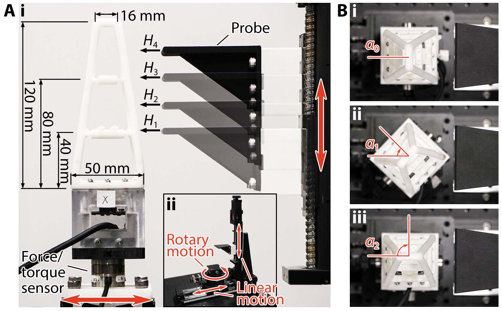
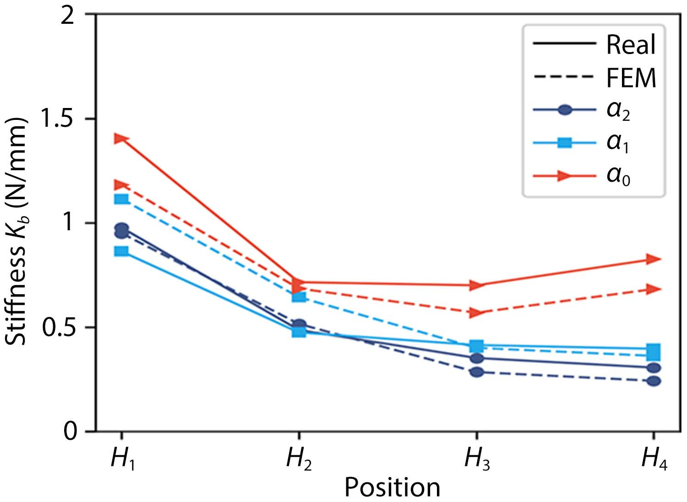
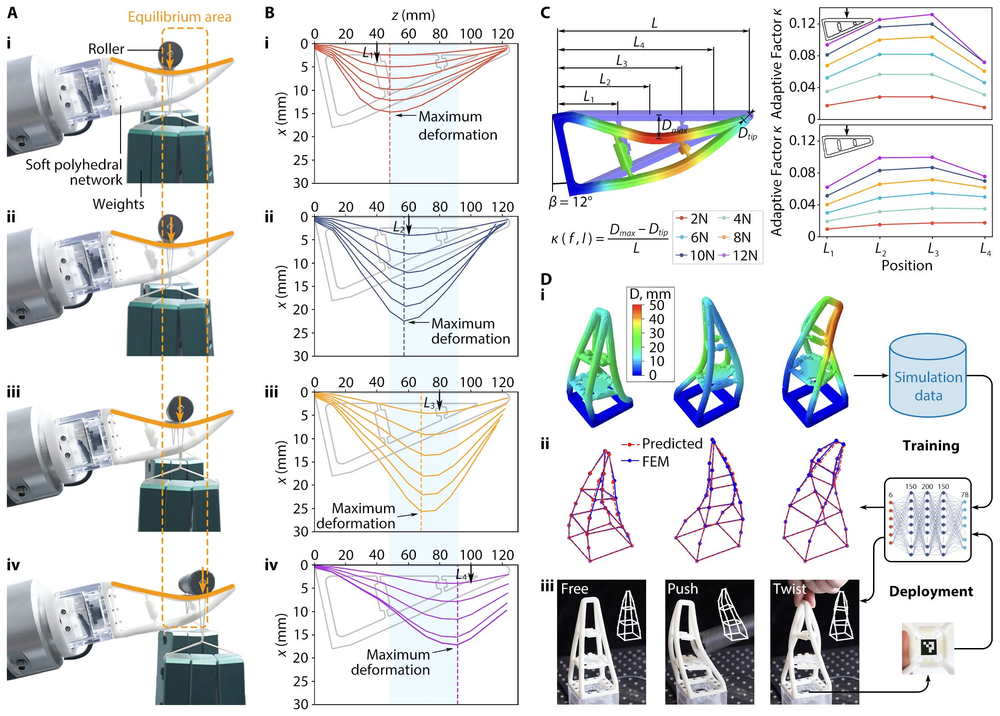
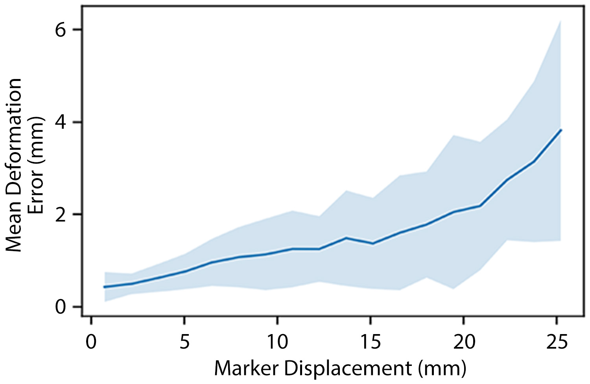

Soft Polyhedral Network design
A polyhedron is generally understood as a solid geometry in three-dimensional space, featuring polygonal faces connected by straight edges, including prisms, pyramids, and platonic solids. Inspired by recent developments in soft robotics, we propose a generic design method by turning all edges of a polyhedron into beam structures made from soft materials, then adding layers inside to form a network, followed by redesigning the ends of all mid-layer edges as flexure joints to reduce inferences during deformation while providing sufficient structural support in a compliant manner. The resultant designs exhibit excellent adaptations in 3D, formulating a class of Soft Polyhedral Networks. In this study, we chose the pyramid shape as the base design and modified it with two vertices on top.
We embedded a miniature motion-tracking system inside the Soft Polyhedral Network to mimic proprioception. The system involves a high-speed camera of up to 330 frames per second (manually adjustable lens, Chengyue WX605 from Weixinshijie) with a large viewing angle (170°) fixed on a mounting base inside the network and a plate attached to the network's first layer with a fiducial marker (ArUco of 16 mm width) stuck to its bottom. The camera is connected to a laptop via a USB cable, which processes the streamed images. The soft network's spatial adaptation is expressed by its structural compliance, then filtered by the fiducial marker's spatial movement inside, next captured by the high-speed camera as image features, and finally encoded as a time series of dimensionally reduced 6D pose vector $\mathbf{D}_t = (D_x, D_y, D_z, D_{rx}, D_{ry}, D_{rz})_t$, namely, the translation and rotation of the marker relative to its initial pose $p_0$ before any deformation. The focal distance was manually adjusted and fixed such that the marker was in focus at around 45 mm. We converted the captured RGB image to a gray image and applied an average filter of a 5x5 kernel to smooth the image before feeding it to the ArUco detection module in OpenCV to detect the pose of the fiducial marker.
We adopt the motion tracking solution for its simplicity, transferability, and low cost in mechanical design and algorithmic computation for benchmarking purposes. For example, the motion tracking solution can be easily transferred to Soft Polyhedral Networks other than the pyramid shapes, including the prism and platonic ones. One can easily mount the Soft Polyhedral Networks on standard grippers by replacing their current rigid fingertips. The system proposed in this study involves only three components: the Soft Polyhedral Network, a miniature high-speed camera, and a pair of base frame and mounting base for fixturing. Simplicity in design is the enabling factor of the proposed Soft Polyhedral Network, supporting its robust adaptation with vision-based tactile sensing for robotic manipulation.
Analytical models for static viscoelasticity
Viscoelasticity describes a material's characteristic of acting like a solid and a fluid, which is universally applicable to robots made from soft matter. The metamaterial design and use of polyurethane for fabrication make the Soft Polyhedral Network responsive to adaptation in a time-dependent and rate-dependent manner. Mechanical characterization of viscoelastic behaviors can be categorized into static and dynamic tests. Static viscoelasticity describes the material's response to a constant loading, including time-changing force resulting from a constant deformation (relaxation) and time-changing deformation resulting from a constant load (creep) over a period. Dynamic viscoelasticity describes the material's response to cyclic or varying loading. In robotic manipulation tasks, the proposed soft gripper undergoes varying loading while closing its fingers and a constant load/deformation while holding the grasped object. Hence, static and dynamic viscoelasticity need to be considered in real robotic applications. In this section, we formulate the analytical models of static viscoelasticity using the Wiechert model for relaxation and the Kelvin model for creep.
We model the stress relaxation process using a Wiechert model, composed of an elastic spring of stiffness $k_e$ parallel to three Maxwell elements. Each Maxwell element consists of a Hookean spring of stiffness $k$ and a Newtonian dashpot of viscosity $\eta$ connected in series, resulting in a characteristic time $\tau=\eta/k$.
$K_{rel}(t) = k_e + \sum_{i=1}^3 k_i\exp(-t/\tau_i)$

We model the creep process using a Kelvin model, which gives a concise analytical expression similar to the Wiechert model for relaxation. It is composed of a spring of stiffness 1/$m_g$ in series with three Voigt elements. Each Voigt element consists of a Hookean spring of stiffness $1/m$ parallel to a Newtonian dashpot of viscosity $1/\varphi$, resulting in a characteristic time $\tau=m/\varphi$.
$C_{rel}(t) = m_g + \sum_{i=1}^3 m_i(1- \exp(-t/\tau_i))$

To characterize the static behavior of viscoelasticity, we set up a experiment by mounting the soft network on a vibration isolation table with a 6-axis force/torque sensor (Nano25 from ATI) in between. A 3D-printed, 5 mm thick, flat probe installed on the tool flange of a robot arm (UR10e from Universal Robots) was used to horizontally compress the soft network's primary interaction face to a certain depth $D_x$ and held the compression for 300 s. We recorded the marker pose and force/torque readings at 30 Hz during the compression. We conducted the compression to three different depths. We found the best-fitting Wiechert model using the least squares method. Such relaxation response characterizes the soft network's viscoelastic behavior, demonstrating adaptations at both geometric and molecular levels. The equilibrium modulus $K_{rel}(\infty)$ drops by 27$\%$ compared to the initial modulus $K_{rel}(0)$. This result indicates that for grasping tasks where the fingers must constantly hold the object, especially when the fingers are made from soft materials, the grasp planning algorithm should anticipate a diminishing gripping force due to viscoelastic relaxation to avoid dropping.

Creep occurs in scenarios of weight compensation while holding an object, which usually occurs on the network's secondary interaction face while holding an object. We placed a cylindrical rod of a 15 mm radius at the center of the network's secondary interaction face. The soft network was tilted at $\gamma = 8^\circ$ to keep the secondary interaction face horizontal as the contact begins. By attaching different weights to the cylindrical rod, we tested its viscoelastic responses to small, medium, and large static forces of $F_y$ at 1.5, 3, and 5.9 N. We also found the best-fitting Kelvin model using the least squares method. The equilibrium compliance $C_{crp}(\infty)$ increased by a significant 37$\%$ compared to the initial compliance $C_{crp}(0)$. One can view creep as a reciprocal effect of relaxation. Both characterize the viscoelastic behavior of the network's molecular adaptation during static interaction. The experimental results agree well with the fact that the relaxation response is faster than creep.
Machine learning model for dynamic viscoelasticity
Dedicating the full analytical model for dynamic viscoelasticity is challenging, unlike static behavior. Based on findings on the viscoelasticity of the Soft Polyhedral Network, we propose a visual force learning method to achieve viscoelastic proprioception by incorporating the fiducial marker's kinetic motions representing the deformation rate. The marker inside the network works like a physical encoder to convert passive, spatial deformations into a 6D pose vector $\mathbf{D}_t$, tracked by the miniature motion tracking system inside the Soft Polyhedral Network with much reduced computational complexity. Then, we developed a decoder model using Multi-layered Perceptrons (MLP) to infer the corresponding 6D forces and torques ($F_x$, $F_y$, $F_z$, $T_x$, $T_y$, $T_z$) as the output. To reflect the speed of interaction during physical contact, we added a velocity term $\dot{\mathbf{D}}_t=\delta \mathbf{D}_t/\delta t$ to the model input by setting $\delta t$ = 15 ms (or five frames per interval at 330 fps) for a stable tracking. The MLP model has an input layer of 12 neurons, followed by three hidden layers with 1,000, 100, and 50 neurons, respectively, and an output layer of 6 neurons.
The simplicity of design enabled us to collect 140,000 samples within 10 minutes by manually interacting with the Soft Polyhedral Network at different heights and speeds. We collected 80,000 samples for training and 60,000 for testing, including the frame-by-frame raw images, recognized marker poses, 6D forces and torques from the ATI sensor as the true labels, and the corresponding timestamps. The dataset's maximum 6D forces and torques are 20 N, 20 N, 10 N, 2 Nm, 2 Nm, and 0.5 Nm, respectively.

We trained three models to verify the speed of interactions' contribution in minimizing the predictions' mean absolute errors (MAEs) for the 6D force and torque outputs. When using deformation $\mathbf{D}_t$ as the only input, the model's mean absolute errors are 0.51 / 0.46 / 0.43 N ($F_x/F_y/F_z$) in forces and 0.049 / 0.062 / 0.01 Nm ($T_x/T_y/T_z$) in torques. However, after adding deformation rate $\dot{\mathbf{D}}_t$ to the input features, the prediction errors are reduced by almost half to 0.25 / 0.24 / 0.35 N in forces and 0.025 / 0.034 / 0.006 Nm in torques. The minor improvement in $F_z$ could be caused by the soft network's relatively less adaptiveness along the $z$-axis by design. Further adding deformation acceleration $\dot{\mathbf{D}}_t$ to the input features leads to a slight improvement in performance, suggesting that the ($\mathbf{D}_t, \dot{\mathbf{D}}_t$) inputs are sufficiently effective to achieve enhanced visual force learning for viscoelastic proprioception.
Learning adaptive kinesthesia
Stiffness distribution and FEM simulation
We conducted a series of unidirectional compression experiments to estimate the stiffness distribution of the Soft Polyhedral Network defined as force over displacement. The soft finger is mounted on a high-performance force/torque sensor (Nano25 from ATI) on top of a custom test rig with two motorized linear motions and one manually driven rotary motion. The force/torque sensor has a resolution of 1/48 N for $F_x/F_y$, 1/16 N for $F_z$, 0.76 Nmm for $T_x/T_y$, and 0.38 Nmm for $T_z$. A probe compressed the Soft Polyhedral Network horizontally at 3 mm/s to a pre-defined depth of 15 mm. We conducted the experiments at three different pushing angles ($\alpha_0$, $\alpha_1$, and $\alpha_2$), where $\alpha_0$ = 0° is to compress the primary interaction face, $\alpha_1$ = 45° is to compress the edge between the primary and secondary interaction faces, and $\alpha_2$ = 90° is to compress the secondary interaction face. Meanwhile, we also adjust the compression height between $H_1$ and $H_4$. The push displacement $\delta$ and reaction force $F$ were recorded to calculate the corresponding stiffness $k = F/\delta$.

We used linear elastic elements and non-linear geometry in the FEM (Finite Element Method) simulations to model the large adaptive deformation. Calibrated to match the experimental stiffness measurement, the FEM simulation used Young's modulus of 12.05 MPa, Poisson ratio of 0.5, and density of 11.3 g/cm3. The solid elements in FEM are 10-node quadratic tetrahedrons with hybrid formulation (C3D10H). The plate for the fiducial marker is a rigid body with a high Young's modulus of 2,600 MPa. The Soft Polyhedral Network's bottom is fixed. A total of about 13,000 elements were used in the simulation. The stiffness distribution calculated with simulated data agrees well with the actual measurement, demonstrating a good match between the simulation and the actual experiments. Both measurements share a similar trend where a U-shape stiffness distribution suggests that the primary interaction face is highly adaptive with a conforming geometry during physical interaction. A decreasing stiffness distribution suggests that the edge and secondary interaction faces are moderately adaptive.

We investigated the soft network's passive adaptation by placing a 3D-printed roller of 7 mm in diameter with different weights (380$\sim$1,140 g) at various locations of the primary interaction face along the horizontal direction. The roller, supported by a ball bearing on each end, always rolled toward an equilibrium area to a complete stop. During the process, the Soft Polyhedral Network started deforming at the point of contact with a tendency to enclose the roller. This tendency generates an equilibrium area with the highest bending curvature between $L_2$ and $L_4$, causing the roller to rotate towards the lowest point until an equilibrium state. The resultant spatial compliance is mechanically adaptive to external loading, which we call "adaptive kinesthesia" of the Soft Polyhedral Network. Here, we define an adaptive factor $\kappa$ to measure adaptive kinesthesia under an external force $f$ exerted at location $l$ along the primary interaction face $S_i$ as
$\kappa_i(f, l)= \frac{D_{max}(l')-D_{tip}}{L}$,
where $D_{max}$ is the maximum displacement of the adaptive deformation, $l'$ is the location of maximum displacement, and $D_{tip}$ is the tip displacement. The adaptive factor $\kappa$ reflects how well the network encloses objects along the primary interaction face, with a higher value indicating a better adaption. The segment towards the tip of the network is not as adaptive as the middle but behaves more like a rigid fingernail, which is desirable to produce a firm grasp. The high stiffness at the tip leads to greater adaptive compliance for the pyramid design of the soft network.

Sim2Real proprioceptive learning
Kinesthesia is appreciated as the ability to detect active or passive limb movements about a joint, which corresponds to the detection and reproduction of structural movement in the Soft Polyhedral Network during spatial interactions. We propose a Sim2Real learning strategy to detect and reproduce the Soft Polyhedral Network's adaptive kinesthesia, i.e., the passive proprioception of whole-body movement, using the embedded miniature camera for sensing and FEM data for training. The geometry of the simulated soft network is represented by a collection of 26 feature points.

The average positional error grows as the soft network exhibits large-scale deformations during physical interactions, ranging from 0.4 to less than 4 mm, with an overall average of 1.18 mm. We made real-time predictions of its whole-body movement during physical interactions, demonstrating the power of Sim2Real learning of the soft network's proprioception in adaptive kinesthesia enhanced by machine learning with FEM.
BibTeX
@article{liu2024proprioceptive,
title ={Proprioceptive learning with soft polyhedral networks},
author = {Xiaobo Liu and Xudong Han and Wei Hong and Fang Wan and Chaoyang Song},
journal = {The International Journal of Robotics Research},
volume = {43},
number = {12},
pages = {1916-1935},
year = {2024},
doi = {10.1177/02783649241238765},
}